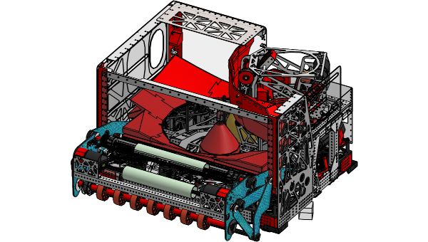

Tribecbot Log Dashboard
Drop a .wpilog file from the Rio to analyze match telemetry — superstructure states, interpolation accuracy, vision quality, power budget, and more.
Drag & drop a .wpilog here
or click to browse

Tribecbot Dashboard DogLog · 2026 Rebuilt based on tempest-dashboardDrop a .wpilog file from the Rio to analyze match telemetry — superstructure states, interpolation accuracy, vision quality, power budget, and more.
Drag & drop a .wpilog here
or click to browse